An 87-second trailer at 480 × 270. Seven characters, five stages and a UI kit were built as .pas documents by agents working through the plugin's own verbs, then scripted beat by beat, recorded in Unity and checked pixel for pixel.
The trailer
87.0 s · 5,220 frames at 60 fps · 480 × 270 nativeshown at x2, nearest neighbour
Every sprite is a Pixel Art Studio file. The only things on screen that are not sprites are the iris wipe, a computed circle, and the camera's black clear colour.
The page plays the native WebM, and the x2 MP4 where WebM is not supported. The 4K and 1080p versions are on YouTube. All of them come from the same edit: the eight master takes joined without a resample, and a mix normalised to -14 LUFS.
The script
Eight scene files, compiled together into one trailer.json: 314 beats, 60 text rows, 63 audio slots and 217 rows on the cue sheet. A beat is one line of JSON: a camera cut or wipe, a tag to play, layers to hide or show, a palette to swap to, a move, a frozen clock, or a line of dialogue. Click a scene on the bar above to jump the trailer to it.
PRESS START
0:00–0:06 · 6.0 s · 360 frames · 19 beats · music M0
Sells The map. Four levels, four features. The title plate, the cursor and the pulsing node are .pas documents too.
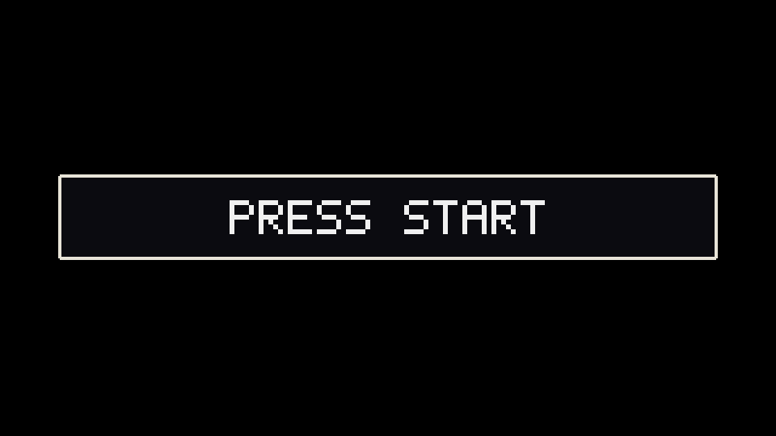
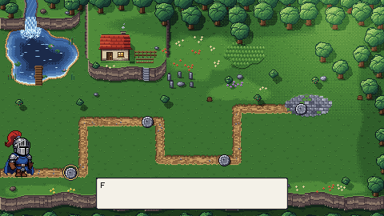
0 pxframe 120 2.0 s: the iris has opened; Sir Stacks starts down the path and the narrator box begins to type. FrameCheck rebuilt it from fresh plugin renders: 0 of 129,600 pixels different, and the recorded x4 and x8 frames are exact nearest-neighbour upscales.
0:06–0:21 · 15.0 s · 900 frames · 29 beats · music M1
Sells Layers and sorting: visibility, complete hidden layers, groups, clipping and Y-sorting at runtime.
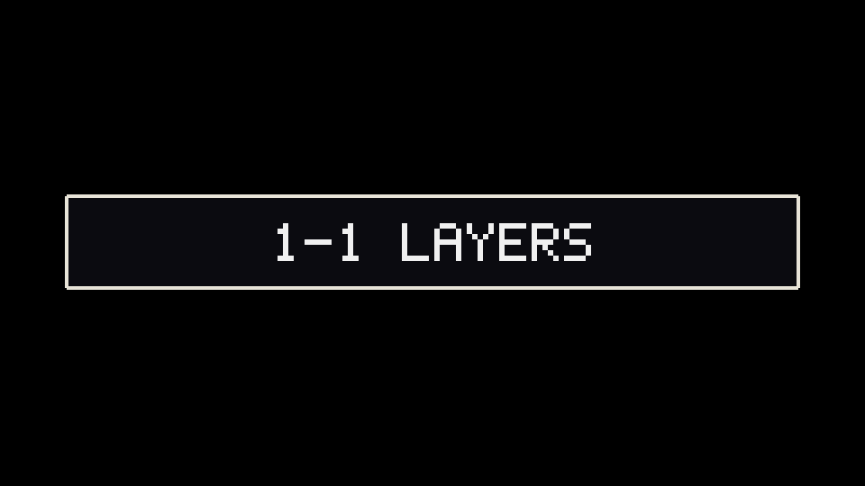
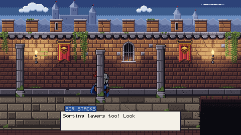
0 pxframe 648 10.8 s: Sir Stacks runs behind the first pillar and will pass in front of the second (Y-sort). FrameCheck rebuilt it from fresh plugin renders: 0 of 129,600 pixels different, and the recorded x4 and x8 frames are exact nearest-neighbour upscales.
SIR STACKSSorting layers too! Look at me go! Woohoo!10.0 s
NARRATOR...I'm okay.13.6 s
All 29 beats (runs of moves on one actor folded)
at (s)
kind
actor
detail
0.00
camera
cut to [-2000, 0]
0.00
say
card: “1-1 LAYERS” until 1.0
1.00
camera
cut to [0, 0]
1.00
tag
stacks
walk
1.00
move
stacks
to [120, 200] over 1.5 s
2.50
tag
stacks
idle
2.50
say
stacks
box: “Every piece of me is a layer.” until 5.0
4.50
hide
stacks
hide Helmet, Plume · label -HELMET
5.00
hide
stacks
hide Cape · label -CAPE
5.50
hide
stacks
hide Pauldrons · label -PAULDRONS
6.00
hide
stacks
hide Breastplate · label -BREASTPLATE
6.50
hide
stacks
hide Gauntlets, Greaves · label -GREAVES
7.00
hide
stacks
hide Tunic · label -TUNIC
7.00
hide
stacks
show Blush
7.20
wait
clock frozen 1.8 s
7.20
say
stacks
box: “Oops. Not that far.” until 9.0
9.00
hide
stacks
hide Blush
9.00
hide
stacks
show Outfit, Cape · label GROUP
9.00
tag
stacks
glint (once)
9.50
say
stacks
label: “CLIP” until 10.0
10.00
hide
stacks
hide Glint
10.00
tag
stacks
run
10.00
move
stacks
to [400, 200] over 2.8 s
10.00
say
stacks
box: “Sorting layers too! Look at me go! Woohoo!” until 12.8
12.80
tag
stacks
fall (once)
12.80
move
stacks
to [430, 380] over 0.8 s
13.60
camera
shake 2 px over 0.3 s
13.60
say
box: “...I'm okay.” until 14.6
14.60
camera
iris-out over 0.4 s
1-2 PALETTES
0:21–0:34 · 13.0 s · 780 frames · 32 beats · music M2
Sells Palette swaps: a runtime swap, colour cycling on the emblem, and a swap on a second sprite (Glob).
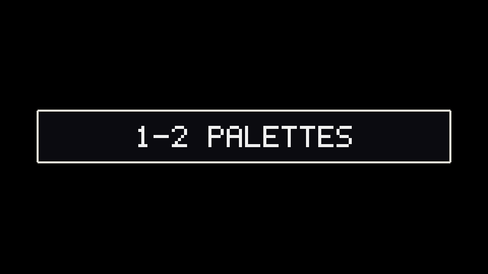
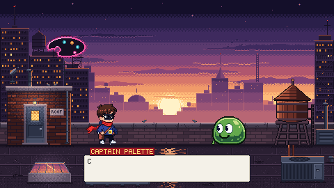
0 pxframe 420 7.0 s: the switch to Captain Palette. Frames 420 and 421 are identical, so the switch is invisible. FrameCheck rebuilt it from fresh plugin renders: 0 of 129,600 pixels different, and the recorded x4 and x8 frames are exact nearest-neighbour upscales.
0:34–0:49 · 15.0 s · 900 frames · 75 beats · music M3
Sells Animation and tiles: tags with hit-stop timing, a Tile Palette export built row by row, and an adjustment layer (KO Grey).
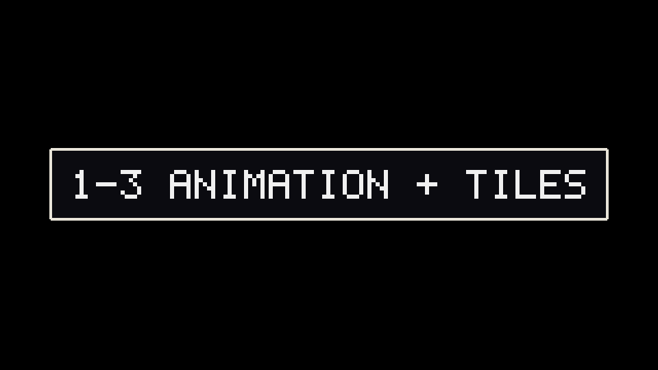
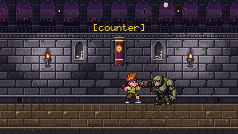
0 pxframe 480 8.0 s: the counter lands. A 0.10 s wait freezes the clock on the contact, then a 3 px shake. FrameCheck rebuilt it from fresh plugin renders: 0 of 129,600 pixels different, and the recorded x4 and x8 frames are exact nearest-neighbour upscales.
box: “Let me finish this fight quickly.” until 4.5
4.50
say
callout: “FIGHT!” until 5.0
5.00
tag
brash
dash (once)
5.00
move
brash
to [262, 214] over 0.6 s
5.00
say
callout: “[dash]” until 5.6
5.60
tag
brash
combo (once)
5.60
say
callout: “[combo]” until 7.4
5.80
tag
bonk
block (once)
5.80
say
bonk
label: “BLOCKED” until 6.3
6.20
move
brash
to [268, 214] over 0.2 s
6.40
tag
bonk
block (once)
6.40
say
bonk
label: “BLOCKED” until 6.9
6.80
move
brash
to [272, 214] over 0.2 s
7.00
tag
bonk
block (once)
7.00
say
bonk
label: “BLOCKED” until 7.5
7.40
tag
bonk
counter (once)
7.40
tag
brash
idle
7.40
move
brash
to [268, 214] over 0.2 s
7.40
say
callout: “[counter]” until 8.4
8.00
wait
clock frozen 0.1 s
8.00
tag
brash
hurt (once)
8.10
camera
shake 3 px over 0.2 s
8.10
move
brash
to [262, 214] over 0.3 s
8.40
tag
brash
ko (once)
8.40
hide
brash
show KO Grey
8.40
move
brash
to [244, 196] over 0.3 s
8.40
say
callout: “K.O.” until 10.0
8.70
move
brash
to [222, 214] over 0.3 s
9.40
tag
bonk
idle
10.00
tag
bonk
talk
10.00
say
bonk
box: “He forgot to tag a block.” until 12.5
12.50
tag
bonk
shrug (once)
12.50
say
bonk
box: “Next!” until 14.6
13.00
say
callout: “BONK WINS” until 14.6
14.60
camera
iris-out over 0.4 s
1-4 DRAWING TOOLS
0:49–1:04 · 15.0 s · 900 frames · 100 beats · music M4
Sells Drawing tools: Curve with pixel-perfect, Free Transform, custom brush, pen pressure, Text, Blur and Scramble.
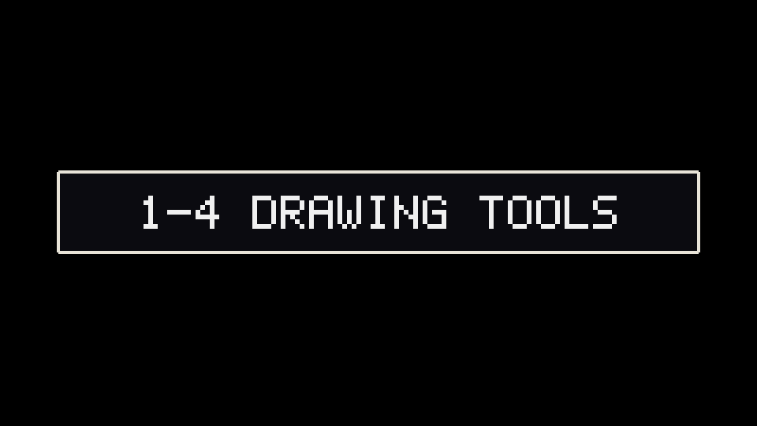
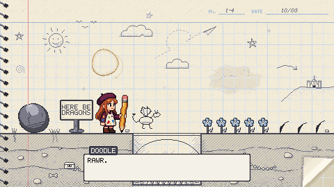
0 pxframe 630 10.5 s: Doodle rises off the page. The sign's text was written with the Text tool. FrameCheck rebuilt it from fresh plugin renders: 0 of 129,600 pixels different, and the recorded x4 and x8 frames are exact nearest-neighbour upscales.
1:04–1:12 · 8.0 s · 480 frames · 24 beats · music M5
Sells The agents: the whole cast, every stage and the UI, built through the agent surface.
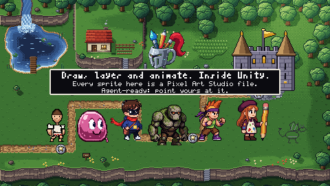
0 pxframe 300 5.0 s: the lineup on the starred map, with the logo and the end card. FrameCheck rebuilt it from fresh plugin renders: 0 of 129,600 pixels different, and the recorded x4 and x8 frames are exact nearest-neighbour upscales.
1:12–1:16 · 4.0 s · 240 frames · 1 beats · music M7
Sells The credits sheet is UI/Credits.pas, rising 2 px a frame.
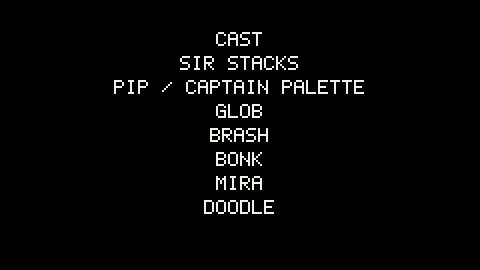
0 pxframe 120 2.0 s: the sheet mid-rise. FrameCheck rebuilt it from fresh plugin renders: 0 of 129,600 pixels different, and the recorded x4 and x8 frames are exact nearest-neighbour upscales.
Documents
UI/Credits.pas
Beat kinds
move 1
Master take
96 s wall · FrameCheck 5/5 frames at 0 px
All 1 beats (runs of moves on one actor folded)
at (s)
kind
actor
detail
0.00
move
sheet
to [240, -2] over 3.8 s
CONTINUE?
1:16–1:27 · 11.0 s · 660 frames · 34 beats
Sells Undo and Redo through the document history, with their default keys.
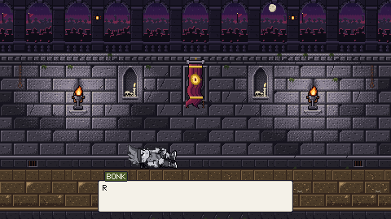
0 pxframe 498 8.3 s: CTRL+Y has put the KO back. KO Grey is shown again. FrameCheck rebuilt it from fresh plugin renders: 0 of 129,600 pixels different, and the recorded x4 and x8 frames are exact nearest-neighbour upscales.
Each character started as one Krea 2 picture. An agent imported it onto a 16 px grid, peeled it into pieces on separate layers, filled what each piece hides, and posed the pieces about their joints to make every frame. The rest frame must equal the design at 0 px, and every frame must have 0 pinholes and 0 islands in every hide state the scenes use.
SIR STACKS
Cast/SirStacks.pas · 128 × 96 Indexed · in PRESS START, 1-1 LAYERS, ALL CLEAR
Every piece of armour is its own layer, so Scene 1 can take it off one piece at a time. Hidden fills under each joint keep every undressed state free of holes.
Cast/Glob.pas · 128 × 96 Indexed · in 1-2 PALETTES, ALL CLEAR
Squash and stretch on a bounce of 6 frames. The pink swap at the end of Scene 2 is the same pixels with another palette.
Design Krea 2 picture, 64 × 64 cells of 16 px
Grid one colour per cell, x3
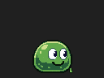
Reference the imported design, x2
Rest frame the layered sprite, x2 0 px
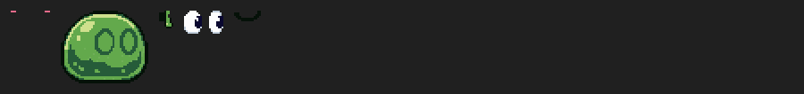
5 pieces, cropped, at x2: Blush, Body, Drip, Eyes, Mouth.
Layer tree, front first (5)
Blush
Eyes
Mouth
Body
Drip
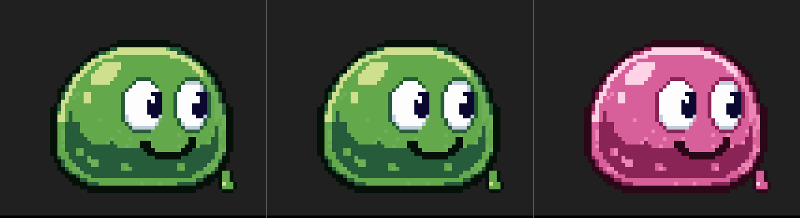
Base, GlobGreen and GlobPink on the same pixels (x6).
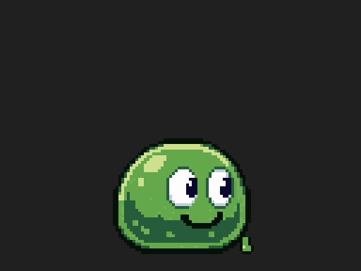
bounceframes 0–5 · 6 f · 100 ms each · loopstalkframes 6–7 · 2 f · 150 ms each · loops
Strips with per-frame pinhole and island countsbounce
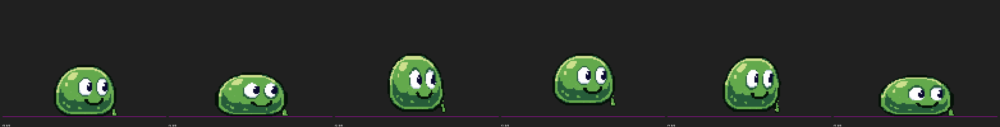
talk
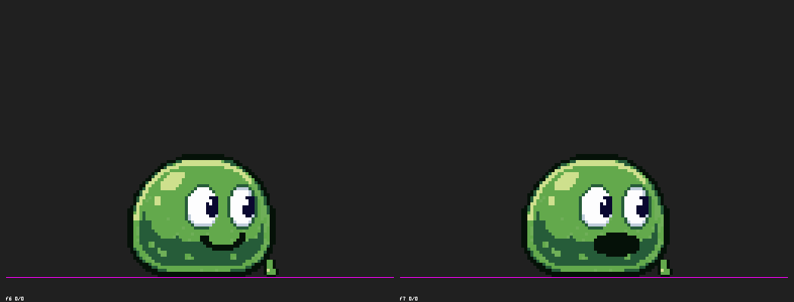
Layers
5 (Drip, Body, Mouth, Eyes, Blush)
Frames
8
Palette
GlobGreen and GlobPink carriers
Hidden overlap
262 px (rig.json)
Frame clean-up
0 px
Tears
0 pinholes, 0 islands on every frame, with and without Blush
Rest vs design
0 px
Agent wall time
about 14 min, still and motion
Editor RSS peak
about 4.3 GB
BRASH
Cast/Brash.pas · 128 × 96 Indexed · in 1-3 ANIMATION + TILES, ALL CLEAR, CONTINUE?
KO Grey is a Hue/Saturation adjustment layer at -100. Every KO frame holds only ink and the six greys.
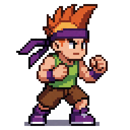
Design Krea 2 picture, 64 × 64 cells of 16 px
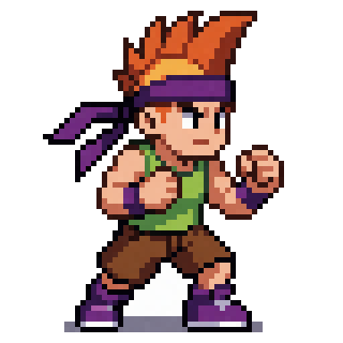
Grid one colour per cell, x3
Reference the imported design, x2
Rest frame the layered sprite, x2 0 px
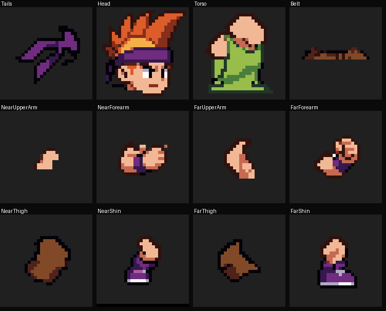
The pieces sheet from the build.
Layer tree, front first (21)
KO Grey (adjustment, hidden)
NearArm
NearUpperArm
NearElbow
NearForearm
Belt
Head
Torso
FarArm
FarUpperArm
FarElbow
FarForearm
NearLeg
NearThigh
NearKnee
NearShin
FarLeg
FarThigh
FarKnee
FarShin
Tails
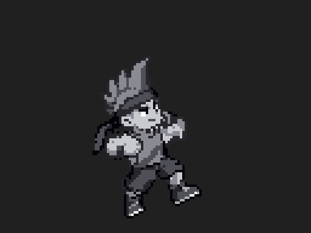
ko + KO Greythe same 6 frames with the adjustment layer shown
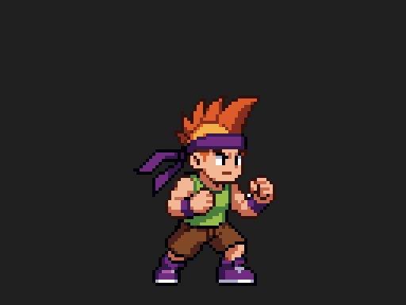
idleframes 0–5 · 6 f · 150 ms each · loops
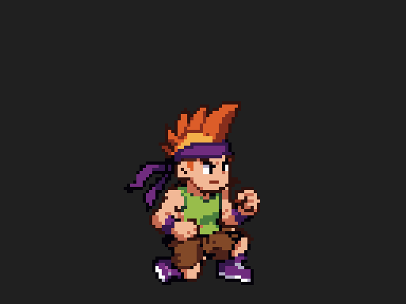
dashframes 6–9 · 4 f · 150 ms each · once
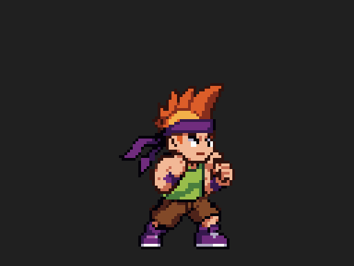
comboframes 10–18 · 9 f · 200 ms each · once
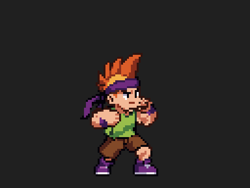
hurtframes 19–20 · 2 f · 100 ms each · once
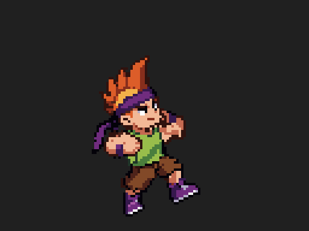
koframes 21–26 · 6 f · 150 150 150 150 200 200 ms · once
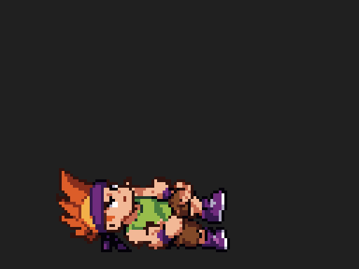
riseframes 21–26 · 6 f · 200 200 150 150 150 150 ms · once, reversed
Strips with per-frame pinhole and island countsidledashcombohurtko
rise
Layers
21 (12 pixel, 8 groups, KO Grey adjustment)
Frames
27
Palette
24 entries in 8 ramps (a 6-step grey ramp for the KO)
Hidden overlap
693 px
Frame clean-up
32 pocket + 7 stray px over 26 frames, at most 6 a frame
Tears
0 pinholes, 0 islands on all 27 frames, default and KO Grey
Rest vs design
0 px
Agent wall time
still 31 min; motion 23 min
Editor RSS peak
3.02 GB
BONK
Cast/Bonk.pas · 128 × 96 (a 60 × 60 design) Indexed · in 1-3 ANIMATION + TILES, ALL CLEAR, CONTINUE?
The moss is a clipped layer over the torso, 17 islands at rest. The counter reaches 24 px.
Design Krea 2 picture, 64 × 64 cells of 16 px
Grid one colour per cell, x3
Reference the imported design, x2
Rest frame the layered sprite, x2 0 px
The pieces sheet from the build.
Layer tree, front first (15)
HeadGroup
Eyes
Jaw
Head
NearArm
NearUpperArm
NearElbow
NearForearm
Moss
Torso
FarArm
FarUpperArm
FarElbow
FarForearm
Legs
idleframes 0–3 · 4 f · 200 ms each · loopsblockframes 4–6 · 3 f · 200 ms each · oncecounterframes 7–12 · 6 f · 150 150 150 150 200 200 ms · oncetalkframes 13–14 · 2 f · 150 ms each · loopsshrugframes 15–18 · 4 f · 150 150 300 300 ms · once
Strips with per-frame pinhole and island countsidleblockcountertalkshrug
Layers
15 (10 pixel, 5 groups)
Frames
19
Palette
16 entries in 5 ramps; amber eyes are emissive
Hidden overlap
1,483 px
Frame clean-up
6 px
Tears
0 pinholes, 0 islands in S0, moss-hidden and eyes-hidden on every frame
Rest vs design
0 px
Agent wall time
still 37 min; motion 14 min
Editor RSS peak
1.95 GB (still)
MIRA
Cast/Mira.pas · 128 × 96 Indexed · in PRESS START, 1-4 DRAWING TOOLS, ALL CLEAR, CONTINUE?
Her pencil doubles as the trailer's mouse cursor: the Cursor layer is a 14-row copy of the tip with its hotspot at (73, 87).
Design Krea 2 picture, 64 × 64 cells of 16 px
Grid one colour per cell, x3
Reference the imported design, x2
Rest frame the layered sprite, x2 0 px
The pieces sheet from the build.
Layer tree, front first (12)
Cursor (hidden)
NearArm
NearFingers
NearHand
NearSleeve
Pencil
FarArm
FarUpperArm
FarForearm
Head
Body
Legs
idleframes 0–3 · 4 f · 200 ms each · loopsdrawframes 4–9 · 6 f · 100 ms each · loopsstampframes 10–12 · 3 f · 150 ms each · loopspointframes 13–14 · 2 f · 200 ms each · loopscursorframes 15–15 · 1 f · 100 ms each · once
Strips with per-frame pinhole and island countsidledrawstamppointcursor
Layers
12 (10 pixel, 2 groups)
Frames
16
Palette
26 entries in 13 ramps, built from the raw design's cell histogram
Hidden overlap
550 px
Frame clean-up
6 px
Tears
0 pinholes, 0 islands in S0, S0 + Cursor and the cursor alone on every frame
Rest vs design
0 px
Agent wall time
still 22 min; motion 10 min
Editor RSS peak
about 2 GB
DOODLE
Cast/Doodle.pas · 64 × 48 Indexed · in 1-4 DRAWING TOOLS, ALL CLEAR
Doodle has no Krea design. He was drawn in the plugin as a pencil sketch (two layers, Body and Wing), and his blur and scramble frames are the Blur and Scramble tools themselves, driven stroke by stroke. Those tool frames are checked for pinholes only, because the tools make islands by design.
riseframes 0–3 · 4 f · 150 ms each · onceblurframes 4–6 · 3 f · 330 ms each · oncescrambleframes 7–11 · 5 f · 200 ms each · once
Strips with per-frame countsriseblurscramble
Layers
2 (Body, Wing)
Frames
12 (rise 0–3, blur 4–6, scramble 7–11)
Frame clean-up
3 px
Tears
0 pinholes, 0 islands on every rise frame
The world
Five stages on 16 px tiles. The first versions read as plain tilemaps, so each stage was redrawn to game-quality detail, with real games as references. Drag across each picture to compare the first version with the final one.
Overworld
Stages/Overworld.pas + OverworldStarred.pas · Intro; the outro uses the starred copy
FIRSTFINAL
Real-game references
Super Mario World (the overworld map)
Zelda: A Link to the Past (the Light World)
Pokemon Emerald routes
Shovel Knight's map
Final version · 18 min of agent time
398 tiles, 55 colours in 11 ramps. Forest wall, waterfall and lake with a dock, cottage plateau, standing stones, south cliff, stone node discs; the path ends at the castle gate. Edge contrast went up for every character (Doodle 1.96 to 2.25, still the weakest).
OverworldStarred.pas, the copy the outro uses: the four node cells on gold-star discs, with node glows in the Light layer.Tileset: 256 × 400 px of 16 px tiles, shown x2
Courtyard
Stages/Courtyard.pas · 1-1 LAYERS
FIRSTFINAL
Real-game references
Castlevania: Symphony of the Night (the castle entrance and the outer wall)
Castlevania: Rondo of Blood
Shovel Knight (Pridemoor Keep)
Final version · 21 min of agent time
218 tiles, 45 colours. Far castle, hills and clouds, battlements, 11 brick variants, banners, ivy, a window, sconces, flagstones, a broken ledge and the pit. Sir Stacks' edge contrast 1.02 to 1.61; background noise 0.045 to 0.011.
Tileset: 256 × 224 px of 16 px tiles, shown x2
Rooftop
Stages/Rooftop.pas · 1-2 PALETTES
FIRSTFINAL
Real-game references
Katana Zero (dusk city rooftops, neon)
Celeste (chapter 3, night-city colours)
Gunpoint (rooftop silhouettes)
Mega Man X (Highway Stage skyline)
Hotline Miami (palettes)
Final version · 22 min of agent time
398 tiles, 63 colours in 13 ramps. Three skyline depths, a neon palette sign, a stair house and a puddle reflection. Edge contrast went up for all seven palette states; noise 0.0285 to 0.0129.
Tileset: 256 × 400 px of 16 px tiles, shown x2
Arena
Stages/Arena.pas, ArenaBackdrop.pas, ArenaRows*.pas · 1-3 ANIMATION + TILES and the post-credit scene
FIRSTFINAL
Real-game references
Street Fighter II (Ryu's Suzaku Castle, Sagat's Thailand temple)
Mortal Kombat II (The Pit II, Kombat Tomb)
Blasphemous (stonework, chains, candles)
Shovel Knight (tile variety)
Final version · 45 min of agent time
88 tiles, 40 colours. A night gallery with a crowd, niches, a crest, chains, torch plates and a sandstone floor. Readability against the wall: Bonk 1.01 to 1.58, Brash 1.62 to 2.54; band noise 0.043 to 0.008.
Tileset: 256 × 128 px of 16 px tiles, shown x2
Sketch
Stages/Sketch.pas · 1-4 DRAWING TOOLS
FIRSTFINAL
Real-game references
Drawn to Life (the drawn world)
Paper Mario (the paper look)
Scribblenauts
notebook games like Doodle Jump (graph paper)
Final version · 20 min of agent time
311 tiles. A sketchbook page: spiral binding, margin, header, doodles, a coffee ring, an eraser ghost, a cut-away of earth with a chest and a dragon skull, a hatched gap with spikes and a curled corner. The play band stays plain; noise 0.069 to 0.023.
Tileset: 256 × 320 px of 16 px tiles, shown x2
The arena builds row by row
Scene 3 opens on the backdrop, then five row-group documents slide in, wall first and floor last. Each is a 480-pixel-wide strip cut from the Arena's tile map with 0 px difference.
Pillar, x4WaterTower, x4Castle, x4Torch, burnBanner, swayNodePulse, 3 frames at 150 ms
Tool moments in Scene 4
These props were drawn by the plugin's own drawing tools, driven stroke by stroke and saved as tags, so each frame of the tag is a state the tool really left behind.
UI/Kit.pas is one 480 × 270 document: the level card, the dialogue box, eight name tags, a star and the iris. Every box and card on this page copies its colours. Text contrast: box 16.31:1, card 17.23:1, name tags 5.67:1 or more.
UI/Kit.pas with every layer shown, x2.
UI/Titles.pas, all three layers, x2: the plate, PRESS START and THE END?UI/EndCard.pas, x2. Contrast 17.23:1.UI/Logo.pas, x4: the logo, rendered by the plugin and compared with the reference render, 0 px different (96 × 96).
How it was made
Nine steps, in order. Steps 2 to 4 are agents working through the plugin's public surface; steps 5 to 8 are the trailer rig, which lives in its own Editor-only folder and never ships with the plugin.
Behind the scenes: the real window
A 3:46 tour of the Studio window as you get it in Unity: the window itself, Bonk built step by step, every drawing tool at real speed, palettes, animation, tiles, an agent driving the open document, and how the trailer above was assembled. Every window shot is the real Editor, recorded on 2026-10-09; the cursor is drawn afterwards from the logged input, and the timelapses carry their speed.
The 960 × 540 page copy. The music is an original chiptune score synthesised in code for this video ("workshop", D major, 100 BPM, -14 LUFS). The 1080p version is on YouTube.
Where the plugin fell short
While they built the trailer, the agents wrote down every place where the plugin's verbs were not enough and they had to fall back to a script of their own: 136 notes in all. 86 of them asked for a new verb and 22 for a clearer explanation in the plugin's SKILL.md. The first 40 became a round of new plugin features, among them the verbs that peel a design, clean a frame, grow hidden overlap and check a pose, which brought the plugin to 83 verbs (65 commands and 18 queries).
The numbers
Every figure here is read from a file: the script, the build logs and reports, the op logs and the capture folders.
5,220frames: 87.0 s at 60 fps, recorded at native, x4 and x8
8scenes, compiled together into one script
314beats, 60 text rows, 63 audio slots, 217 cue rows
35documents in the master (55 actors); 47 .pas files in the trailer folders (7 in Cast/, 7 in Palettes/, 28 in Stages/, 5 in UI/)
106 / 130layers / frames across the seven cast documents
145 / 145FrameCheck frames at 0 px in the master takes, x4 and x8 exact
54distinct pas.* verbs in 21,628 logged calls (16 op logs)
136places the agents noted where the plugin fell short
442tests of the trailer tooling, all passing
53 minof recording for the eight master takes, as the log rounds it; 1.8 GB on disk
7.11 GBhighest Editor RSS (Sir Stacks' first motion pass, stopped); master takes stayed at or under 3.2 GB
-14.0LUFS integrated, true peak -1.0 dB, on the release mix
The verbs the agents called most
Logged calls per verb across the op logs, top 12. The first stages were drawn mostly with pas.draw.rect; the final stages wrote their tiles as pixel text with pas.pixels.text, about one call per tile; the cast agents posed their pieces with pas.transform.free, Sir Stacks alone 1,571 times.
Agent wall time, as the logs record it
Work
Minutes
Sir Stacks: still, overlap pass, motion
18, 67, 38
Pip: still, motion
25, 14
Glob: still and motion
14
Brash: still, motion
31, 23
Bonk: still, motion
37, 14
Mira: still, motion
22, 10
Stages, first version (two agents)
19, 15
UI kit, credits, Doodle
11
Tool captures; Arena wall and rows
13, 15
Stages, final version: Arena, Courtyard, Rooftop, Overworld, Sketch
SIR STACKSPIPCAPTAIN PALETTEGLOBBRASHBONKMIRADOODLE
Asset Store images, in store order
Ten 2400 × 1600 images made from trailer frames: six are trailer art with callouts, four put the Studio window over the stage. Shown at a quarter of their size.
01 Captain Palette on the Rooftop, with the five-palette strip02 The Layers panel: hide state S3, groups and the Glint clip03 Brash's KO with the strip of turn frames04 The palette menu on the five library palettes05 Sir Stacks with the S0–S6 hide-state strip06 KO Grey with the Hue/Saturation settings at -10007 Mira's sketch level with five tools marked08 The Tileset and the Scratchpad (the Arena map)09 Bonk's counter, with the moss and the eyes at x210 Glob, green to pink